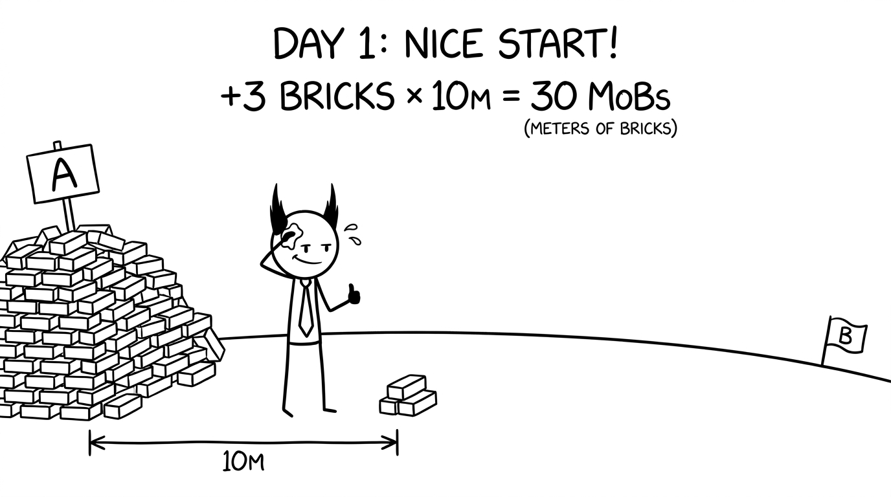

<section id="day-1" data-transition="fade" style="display:flex; align-items:center; justify-content:center; padding:0; background:#fcfcfa">

<p style="position:absolute;left:0;bottom:10px;width:1920px;margin:0;text-align:center;font-family:'Patrick Hand', 'Trebuchet MS', sans-serif;font-size:22px;color:#8a8f98">Copyright Dobromir Montauk 2026</p>
<aside><b>Day 1.</b> Celebrate it: it’s a real, measurable win. Then do the math out loud. How many bricks are in that pile? How far is B? Let the room get a little uneasy.</aside>
</section>
